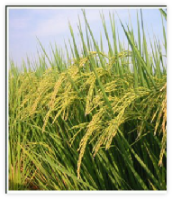

緣起
十多年前一個機會，與美國 YoungLife
關懷青少年機構接觸，默默地在心中種下一顆小小的夢想種籽。
這顆種籽，經過漫長的耕耘與等待……
終於在2011年4月16日說明分享會宣布成立。
經過幾個月的奔走向內政部申請，於2011年8
月27日「社團法人台灣秧扶青少年關懷協會」
完成立案。

我們相信每個孩子都是一株等待澆灌的秧苗，需要被在乎、被聆聽、被理解、被引導，扶他一把，使品格得以建立，生根建造，終至茁壯吐穗，結出生命的美好果實，於是取名為「秧」「扶」青少年關懷協會。
秉持「陪伴」的信念，透過營會、體驗訓練、戶外活動等培育管道，與青少年相處、建立友誼。更盼望成為青少年輔導、志工及機構工作人員的支持平台，不定期舉辦研討會、同行小組、工作坊、團隊資源連結、國際青少年事工機構交流等，提供更多訓練與資訊，讓愛真實成為每一位青少年與輔導的養分，澆灌每一顆種籽，至終長大、成熟。